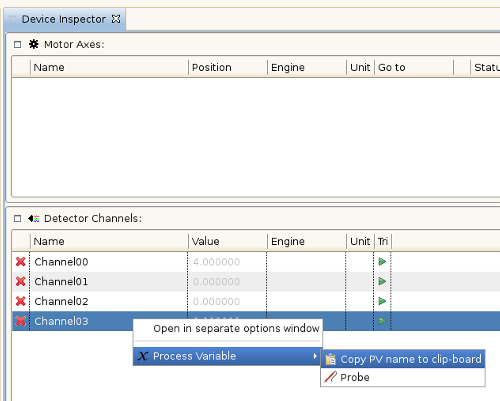

Copy PV Name to Clipboard
To add the name of a process variable to the clipboard follow these steps:
- Either in the Device Inspector View or Device Options View right click on a row.
- In the appearing context menu navigate and follow the entry „Process Variable”.
- Click on „Copy PV name to clipboard”.
- Now you can add paste the name from the clipboard whereever appropriate.
